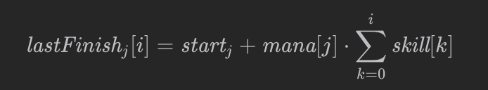
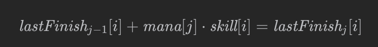
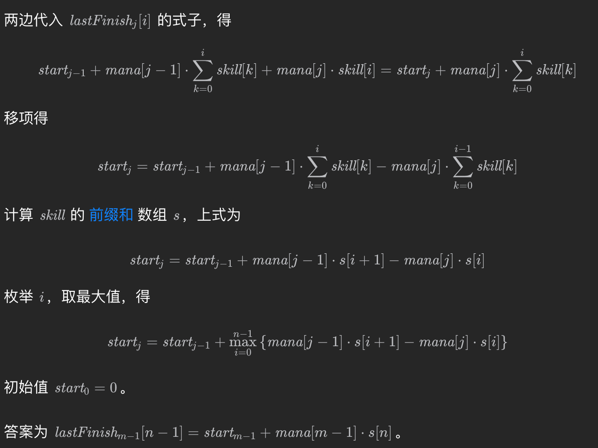

classSolution: defminTime(self, skill: List[int], mana: List[int]) -> int: prev = [0] * len(skill) defmax(x, y): return x if x >= y else y for idx, m inenumerate(mana): f = [0] * len(skill) mx = prev[0] for i, s inenumerate(skill): f[i] = f[i - 1] + s * m if i < len(skill) - 1: mx = max(mx, prev[i + 1] - f[i]) for i inrange(len(skill)): f[i] = f[i] + mx prev = f return f[-1]
国服被卡常了, 美服AC了.
后续看灵神的解答发现还有几种有意思的方案.
递推解法
药水每次必须连续制作, 所以知道开始时间我们就可以算出结束时间.
第i个巫师完成第j瓶药水的公式如下:

如果我们可以从 $ start_{i-1} $ 推出
$ start_{i-1} $ 就好了
从上一次到下一次, 我们其实总是卡在了最慢的那个巫师.
所以对于最慢的巫师我们有:

此时把lastfinish全部代入即有:

由此我们有代码如下:
1 2 3 4 5 6 7 8
classSolution: defminTime(self, skill: List[int], mana: List[int]) -> int: n = len(skill) s = list(accumulate(skill, initial=0)) # skill 的前缀和 start = 0 for pre, cur in pairwise(mana): start += max(pre * s[i + 1] - cur * s[i] for i inrange(n)) return start + mana[-1] * s[-1]
classSolution: defminTime(self, skill: List[int], mana: List[int]) -> int: n = len(skill) s = list(accumulate(skill, initial=0))
suf_record = [n - 1] for i inrange(n - 2, -1, -1): if skill[i] > skill[suf_record[-1]]: suf_record.append(i)
pre_record = [0] for i inrange(1, n): if skill[i] > skill[pre_record[-1]]: pre_record.append(i)
start = 0 for pre, cur in pairwise(mana): record = pre_record if pre < cur else suf_record start += max(pre * s[i + 1] - cur * s[i] for i in record) return start + mana[-1] * s[-1]
凸包+二分
前面我们已经提取出了公式:
(mana[j−1]−mana[j])⋅s[i]+mana[j−1]⋅skill[i]
我们完全可以改写成点积的形式
v[i] = (s[i], skill[i]) p = (mana[j−1]−mana[j],mana[j−1])
classSolution: # Andrew 算法，计算 points 的上凸包 # 由于横坐标（前缀和）是严格递增的，所以无需排序 defconvex_hull(self, points: List[Vec]) -> List[Vec]: q = [] for p in points: whilelen(q) > 1and (q[-1] - q[-2]).det(p - q[-1]) >= 0: q.pop() q.append(p) return q
defminTime(self, skill: List[int], mana: List[int]) -> int: s = list(accumulate(skill, initial=0)) vs = [Vec(pre_sum, x) for pre_sum, x inzip(s, skill)] vs = self.convex_hull(vs) # 去掉无用数据
start = 0 for pre, cur in pairwise(mana): p = Vec(pre - cur, pre) # p.dot(vs[i]) 是个单峰函数，二分找最大值 check = lambda i: p.dot(vs[i]) > p.dot(vs[i + 1]) i = bisect_left(range(len(vs) - 1), True, key=check) start += p.dot(vs[i]) return start + mana[-1] * s[-1]